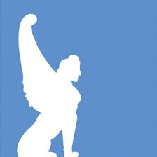

Work Experience
Research Fellow | DHiLab @ CNR ISPC

- Research for EU-funded PERCEIVE project focused on virtual exhibitions and digital authenticity
- Photogrammetry, 3D modeling, and asset optimization
- UX, UI, and interaction design for museum experiences
- Scientific writing and research documentation
Intern | Noho Ltd
- Conducted expert interviews and continued thesis-related research
- Performed 3D modeling and explored game development fundamentals
- Participated in communication and logistics tasks
Intern | DHiLab @ CNR ISPC
- Researched exhibition and virtual design frameworks
- Supported photogrammetry sessions and stakeholder interviews for CHANGES project at Palazzo Poggi

Intern | Fondazione Federico Zeri
- Assisted public visitors and cataloged archival materials
- Specialized in the Kliemann archive